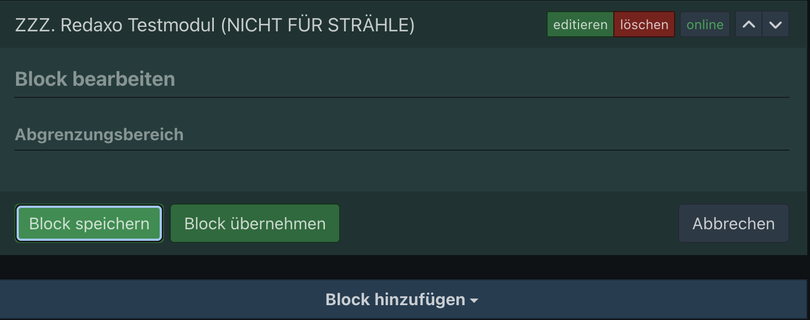
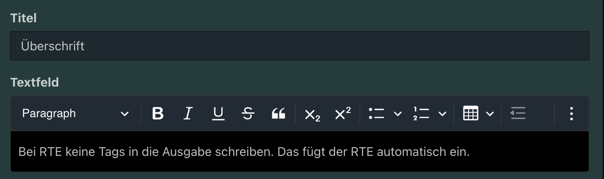
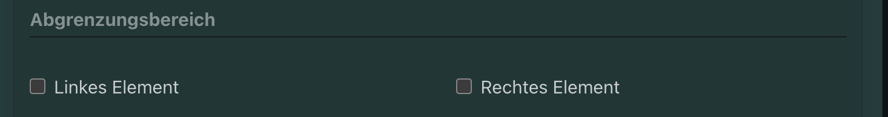
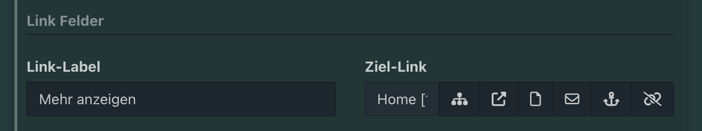
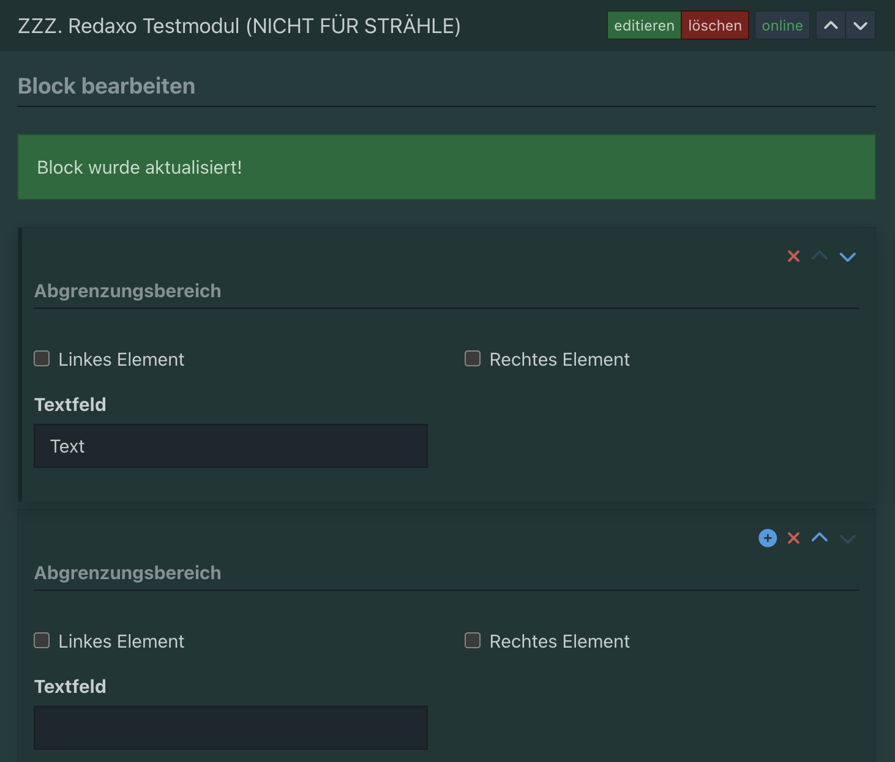
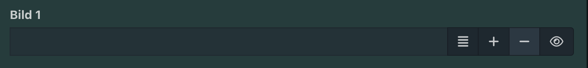
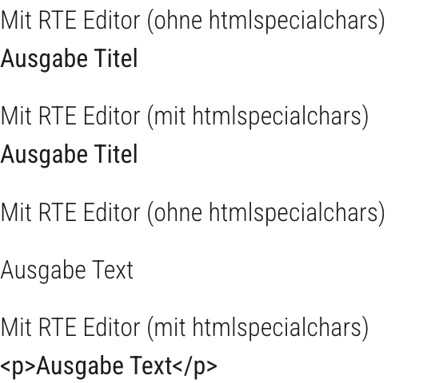

<div class="block">
  <div class="container site-border">
    <h1>Redaxo Eingabe / Ausgabe</h1>
    <h2>Grundgerüst Eingabe</h2>
    <pre>
    &lt;?php
    use FriendsOfRedaxo\MForm;

    $mform = MForm::factory();

    echo $mform->show();
    </pre>
    <h2>add FieldsetArea</h2>
    <p>
      add FieldsetArea ist ein Wrapper und dient der Gruppierung von Inhalt.
    </p>
    <pre>
    &lt;?php
    use FriendsOfRedaxo\MForm;

    $mform = MForm::factory();
        ->addFieldsetArea('Abgrenzungsbereich', MForm::factory()
        );
    echo $mform->show();
    </pre>
    
    <h2>addTextField und addTextAreaField</h2>
    <pre>
        $mform = MForm::factory()
        ->addCheckboxField('1.checkbox', 
            ['css_klasse' => 'Checkbox-Name'], ['full' => true])
        ->addTextField('1.titel', ['label' => 'Titel', 'full' => true])
        ->addTextAreaField('1.text', 
            ['label' => 'Textfeld', 'full' => true, 
            'class' => 'cke5-editor', 'data-profile' => 'default'])
        ->addFieldsetArea('Repeater Element')
        ->addRepeaterElement(2, $repeaterElement, false, false, ['minItems' => 0]); 
        echo $mform->show();
    </pre>
    <p>Abruf (Ausgabe)</p>
    <pre>
        &data = rex_var::toArray('REX_VALUE[1]') ?: [];
        &lt;?php if (!empty($data['titel'])) { ?&gt;
        &lt;h2&gt; &lt;?= $data['titel'] ?&gt; &lt;/h2&gt;
        &lt;?php } ?&gt;
        &lt;?php if (!empty($data['text'])) { ?&gt;
        &lt;?= $data['text'] ?&gt;
        &lt;?php } ?&gt;
    </pre>
    
    <h2>addColumnElement</h2>
    <p>
      Mit addColumnElement können Elemente als Grid angeordnet werden. Die 6
      steht hierbei für die Grid Spalten. 6 von 12 wäre also 50%.
    </p>
    <pre>
        &lt;?php
        use FriendsOfRedaxo\MForm;

        $mform = MForm::factory()
            ->addFieldsetArea('Abgrenzungsbereich', MForm::factory()
                ->addColumnElement(6, MForm::factory()
                        ->addCheckboxField('left_item', 
                            ['css_klasse' => 'Linkes Element'], ['full' => true])
                    )
                ->addColumnElement(6, MForm::factory()
                        ->addCheckboxField('right_item', 
                            ['css_klasse' => 'Rechtes Element'], ['full' => true])
                    )
            );

        echo $mform->show();
    </pre>
    
    <h2>addCustomLinkField und addTextField</h2>
    <pre>
        &lt;?php
        use FriendsOfRedaxo\MForm;

        $repeaterElement = MForm::factory()
         ->addFieldsetArea('Abgrenzungsbereich', MForm::factory()
             ->addColumnElement(6, MForm::factory()
                     ->addCheckboxField('left_item', 
                        ['css_klasse' => 'Linkes Element'], ['full' => true])
                      ->addTextField('text', ['label' => 'Textfeld', 'full' => true])
                  )
             ->addColumnElement(6, MForm::factory()
                     ->addCheckboxField('right_item', 
                        ['css_klasse' => 'Rechtes Element'], ['full' => true])
                 )
              ->addFieldsetArea('Link Felder')
              ->addColumnElement(6, MForm::factory()
                  ->addTextField('link_label', ['label' => 'Link-Label', 'full' => true])
              )
             ->addColumnElement(6, MForm::factory()
                 ->addCustomLinkField('link_link', ['label' => 'Ziel-Link', 'full' => true])
             )
          );

        $mform = MForm::factory()
        ->addCheckboxField('1.checkbox', ['css_klasse' => 'Checkbox-Name'], ['full' => true])
        ->addTextField('1.titel', ['label' => 'Titel', 'full' => true])
        ->addTextAreaField('1.text', 
            ['label' => 'Textfeld', 'full' => true, 
            'class' => 'cke5-editor', 'data-profile' => 'default'])
        ->addFieldsetArea('Repeater Element')
          ->addRepeaterElement(2, $repeaterElement, false, false, ['minItems' => 0]); 
        echo $mform->show();
    </pre>
    <p>Ausgabe</p>
    <pre>
        $repeaterElement = rex_var::toArray('REX_VALUE[2]') ?: [];

        &lt;?php foreach ($repeaterElement as $item) { ?&gt;
        &lt;?php if (!empty($item['left_item'])) { ?&gt;
            &lt;p&gt;&lt;?= htmlspecialchars($item['text'] ?? '') ?&gt;&lt;/p&gt;
        &lt;?php } ?&gt;
        &lt;?php if (!empty($item['link_label']) && !empty($item['link_link'])) { ?&gt;
        &lt;a href="&lt;?= getUrlFromCustomLink($item['link_link']); ?&gt;"
           target="&lt;?= getTargetAttribute($item['link_link']); ?&gt;"&gt;
            &lt;?= htmlspecialchars($item['link_label']); ?&gt;
            &lt;span class="icn icn--arrow-right" aria-hidden="true">&lt;/span&gt;
        &lt;/a&gt;
    &lt;?php } ?&gt;
    </pre>
    
    <h2>addRepeaterElement</h2>
    <p>addRepeaterElement($valueId, $mform, $addButton, $deleteButton, $options)</p>
    <p>Wobei Option 3 bis 5 optional sind. 3 und 4 sind veraltet und haben keine Auswirkung bei true oder false.</p>
    <p>$options sind zB 'btn_text' => 'Repeater Element hinzufügen' //Text im Repeater Button</p>
    <p>'max' => 4, 'min' => 2 // Begrenzung der Repeater Elemente</p>
    <pre>
        &lt;?php
        use FriendsOfRedaxo\MForm;

        $ersterBereich = MForm::factory()
          ->addFieldsetArea('Abgrenzungsbereich', MForm::factory()
              ->addColumnElement(6, MForm::factory()
                      ->addCheckboxField('left_item', 
                            ['css_klasse' => 'Linkes Element'], ['full' => true])
                      ->addTextField('text', ['label' => 'Textfeld', 'full' => true])
                 )
             ->addColumnElement(6, MForm::factory()
                      ->addCheckboxField('right_item', 
                            ['css_klasse' => 'Rechtes Element'], ['full' => true])
                 )
          );

        $mform = MForm::factory()
           ->addRepeaterElement(2, $ersterBereich, false, false, ['minItems' => 0]); 
        echo $mform->show();
    </pre>
    <p>Ausgabe (Abruf:)</p>
    <pre>
        &lt;?php
        $ersterBereich = rex_var::toArray('REX_VALUE[2]') ? : [];
        ?>

        &lt;?php if (rex::isFrontend()) { ?>

        &lt;section>
        &lt;?php foreach ($ersterBereich as $item) { ?>
           &lt;?php if (!empty($item['left_item'])) { ?>
              &lt;p>&lt;?= htmlspecialchars($item['text'] ?? '') ?>&lt;/p>
           &lt;?php } ?>
        &lt;?php } ?>
        &lt;/section>

        &lt;?php } ?>
          </pre>
    
    <h2>Objekte $object abrufen</h2>
    <pre>
        &lt;?php
        use FriendsOfRedaxo\MForm;

        $checkbox = MForm::factory()
           ->addCheckboxField(1, ['css_klasse' => 'Checkbox-Name'], ['full' => true]);

        $repeaterElement = MForm::factory()
            ->addFieldsetArea('Abgrenzungsbereich', MForm::factory()
               ->addColumnElement(6, MForm::factory()
                    ->addCheckboxField('left_item', 
                            ['css_klasse' => 'Linkes Element'], ['full' => true])
                    ->addTextField('text', ['label' => 'Textfeld', 'full' => true])
                    )
                ->addColumnElement(6, MForm::factory()
                    ->addCheckboxField('right_item', 
                            ['css_klasse' => 'Rechtes Element'], ['full' => true])
                 )
         );

        $mform = MForm::factory()
         ->addFieldsetArea('Checkbox', $checkbox)
           /* ODER SO*/
           ->addCheckboxField(1, ['css_klasse' => 'Checkbox-Name'], ['full' => true])
          ->addFieldsetArea('Repeater Element')
          ->addRepeaterElement(2, $repeaterElement, false, false, ['minItems' => 0]); 
        echo $mform->show();
    </pre>
    <p>Ausgabe</p>
    <pre>
        REX_TEMPLATE[key=inc_rexvalues]
        REX_TEMPLATE[key=basic_functions]

        &lt;?php
        $checkbox = REX_VALUE[1];
        $repeaterElement = rex_var::toArray('REX_VALUE[2]') ?: [];
        ?>

        &lt;?php if (rex::isFrontend()) { ?&gt;
        &lt;section&gt;
         &lt;?php foreach ($repeaterElement as $item) { ?&gt;
              &lt;?php if (!empty($item['left_item'])) { ?&gt;
                  &lt;p>&lt;?= htmlspecialchars($item['text'] ?? '') ?&gt;&lt;/p&gt;
              &lt;?php } ?&gt;
         &lt;?php } ?&gt;

          &lt;?php if ($checkbox) { ?&gt;
               &lt;p>Checkbox ist aktiviert!&lt;/p&gt;
           &lt;?php } ?&gt;
        &lt;/section&gt;
        &lt;?php } ?&gt;

        REX_TEMPLATE[key=inc_moduleinfo]


    </pre>
    <h2>addMediaField</h2>
    <pre>
        ->addMediaField('1.img1', ['label' => 'Bild 1', 'full' => true])
    </pre>
    <p>Ausgabe</p>
    <pre>
        $data = rex_var::toArray('REX_VALUE[1]') ?: [];
        &lt;?php if ($data["img1"]) { ?>
        &lt;div>
            &lt;?= pictureTag($data["img1"], 720); ?>
        &lt;/div>
        &lt;?php } ?>
    </pre>
    

    <h2>pictureTag Template</h2>
    <pre>
    if (!function_exists('pictureTag')) {
    function pictureTag($filename, $maxSize, $class = '') {
        $media = rex_media::get($filename);
        $alt   = $media ? $media->getValue('med_alt') : '';

        // Wenn SVG, dann direkt ausgeben, keine WebP Quellen
        if ($media->getType() === 'image/svg+xml') {
            $url = rex_url::media($filename);
            $alt = $media->getValue('med_alt') ?? '';
            return '&lt;img class="' . $class . '" src="' . $url . '" 
            alt="' . htmlspecialchars($alt) . '" loading="lazy">';
        }
        
        $availableSizes = [460, 800, 1200, 1600, 2000, 2500];
        $sizes = array_filter($availableSizes, fn($size) => $size &lt;= $maxSize);
        if (empty($sizes)) {
            $sizes = [min($availableSizes)];
        }

        $webpSources = '';
        foreach ($sizes as $size) {
            $webpUrl = rex_media_manager::getUrl("webp_$size", $filename);
            $webpSources .= '&lt;source srcset="'.$webpUrl.'" 
            type="image/webp" media="(max-width: '.$size.'px)">';
        }

        $fallbackSizes = array_filter($availableSizes, fn($size) => $size > $maxSize);
        if (!empty($fallbackSizes)) {
            $fallbackSize = min($fallbackSizes);
            $webpUrl = rex_media_manager::getUrl("webp_$fallbackSize", $filename);
            $webpSources .= '&lt;source srcset="'.$webpUrl.'" type="image/webp">';
        }

        $fallbackImg = rex_media_manager::getUrl("webp_".$sizes[0], $filename);

        return '
            &lt;picture>
                '.$webpSources.'
                &lt;img class="' . $class . '" src="' . $fallbackImg . '" 
                alt="' . htmlspecialchars($alt) . '" loading="lazy" decoding="async">
            &lt;/picture>';
        }
    }
    </pre>
    <h2>PHP Funktionen</h2>
    <h3>htmlspecialchars()</h3>
    <p>htmlspecialchars() ist eine PHP-Funktion, die HTML-Sonderzeichen in sichere Zeichen umwandelt.</p>
    <p>Nur für Texte zwischen HTML-Tags anwenden.</p>
    <p>Damit schützt man sich vor Cross-Site Scripting (XSS) Angriffen, indem man verhindert, dass schädlicher Code als HTML interpretiert wird.</p>
    </p>
    <p>Aber nicht bei RTE Editor anwenden, da sonst die Tags mit ausgegeben werden.</p>
    <pre>
        &lt;?php if (!empty($data['title'])){ ?>
        &lt;p>Mit RTE Editor (ohne htmlspecialchars)&lt;/p>
        &lt;?= $data['title'] ?>
    &lt;?php }; ?>
    &lt;?php if (!empty($data['title'])){ ?>
        &lt;p>Mit RTE Editor (mit htmlspecialchars)&lt;/p>
        &lt;?= htmlspecialchars($data['title']) ?>
    &lt;?php }; ?>
    
    &lt;?php if (!empty($data['text'])){ ?>
        &lt;p>Mit RTE Editor (ohne htmlspecialchars)&lt;/p>
        &lt;?= $data['text'] ?>
    &lt;?php }; ?>
    &lt;?php if (!empty($data['text'])){ ?>
        &lt;p>Mit RTE Editor (mit htmlspecialchars)&lt;/p>
        &lt;?= htmlspecialchars($data['text']) ?>
    &lt;?php }; ?>
    </pre>
    <p>Ausgabe: </p>
    
    <h3>strip_tags()</h3>
    <p>strip_tags() ist eine PHP-Core-Funktion, die HTML-Tags komplett entfernt.</p>
    <p>Aber strip_tags() entfernt keine Attribute, JS, EventHandler. Daher kein XSS-Schutz.</p>
    <h3>rex_escape()</h3>
    <p>rex_escape() ist eine Redaxo-Funktion, die HTML-Sonderzeichen in sichere Zeichen umwandelt.</p>
    <p>rex_escape() ist dazu kontextsensitiv, kann also für alles angewendet werden.</p>
    <p>Escapen = Sonderzeichen so verändern,dass sie ihre „besondere Bedeutung“ verlieren</p>
    <p>So wird JS ausgeführt! GEFÄHRLICH!</p>
    <p><a href="&lt;?= $value ?>">Link</a></p>
    <p>Ergebnis: &lt;a href="">&lt;script>alert("XSS")&lt;/script>">Link&lt;/a></p>
    <p>So wird kein JS ausgeführt! Sicher!</p>
    <p>&lt;a href="&lt;?= rex_escape($value, 'html_attr') ?>">Link&lt;/a></p>
    <p>Ergebnis: &lt;a href="&quot;&gt;&lt;script&gt;alert(&quot;XSS&quot;)&lt;/script&gt;">
  Link
&lt;/a> //Hier werden die tags als code ausgegeben</p>
    <table>
  <thead>
    <tr>
      <th>Kontext</th>
      <th>Wo?</th>
      <th>Was wird geschützt?</th>
      <th>rex_escape Strategie</th>
    </tr>
  </thead>
  <tbody>
    <tr>
      <td>HTML</td>
      <td>Text zwischen HTML-Tags</td>
      <td>&lt;script&gt;, &lt;img&gt;, HTML-Injection</td>
      <td><code>html</code></td>
    </tr>
    <tr>
      <td>HTML-Attribut</td>
      <td>href, title, alt, class</td>
      <td>" onmouseover=, Attribut-Ausbruch</td>
      <td><code>html_attr</code></td>
    </tr>
    <tr>
      <td>URL</td>
      <td>href, src</td>
      <td>javascript:, data:</td>
      <td><code>url</code></td>
    </tr>
    <tr>
      <td>JavaScript</td>
      <td>&lt;script&gt; oder JS-Strings</td>
      <td>'; alert(), JS-Injection</td>
      <td><code>js</code></td>
    </tr>
    <tr>
      <td>JSON</td>
      <td>Inline-JS / API-Daten</td>
      <td>Anführungszeichen, Slashes</td>
      <td><em>nicht direkt in rex_escape</em></td>
    </tr>
  </tbody>
</table>

  </div>
</div>
